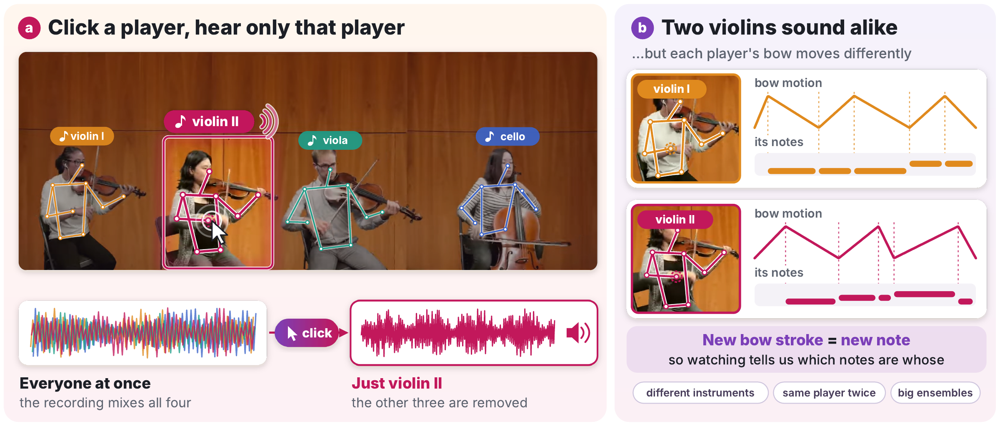

Who Plays What
Same-instrument music separation from video. Click one musician and hear only that musician, even when another player of the same instrument plays at the same time.


Overview
Two violins sound alike and look alike.
Audio-only separators return the whole instrument stem, and appearance-based audio-visual models can't tell two players of the same instrument apart. What differs is what each player does, and when. Who Plays What reads the clicked player's movement and uses it to pull their part out of the recording.
One click
Click a player, like a SAM point prompt. SAM 2.1 follows them through the video.
Watch how they play
Frozen V-JEPA 2 features of the player's crop and the velocities of 48 body and hand keypoints carry the player's timing.
Hear only them
A pretrained BS-RoFormer reads the player's video through cross-attention and keeps only that player, even next to a twin instrument.
Method
Motion-conditioned separation
Every video token carries its time, so audio and video line up without resampling. After every time transformer in the separator, a cross-attention layer reads the clicked player's video tokens. A complex-mask head gives the player's spectrogram.
![Method overview: the clicked player is tracked by SAM 2.1; frozen V-JEPA 2 video features and RTMW motion features (48 keypoints) form tokens on a shared 10 ms grid; the BS-RoFormer separator (x12, initialised from MVSep Mega) cross-attends from the audio band-split features to these tokens; a mask head and iSTFT give the clicked player's sound. Training mixtures pair the player with a different instrument, the same instrument, a pitch and tempo matched one, or the same performer at another time, plus up to 3 other instruments and mirroring. Inference uses 4 s windows with 50% overlap.](assets/method.png)
Trained only on artificial mixes of solo clips (Solos + MUSIC-21, 26 instruments). Open full size.
Results
Real ensembles, never seen in training
URMP. SDR in dB (museval) of the output against the clicked player's true track, median over 58 clicked players. Each one plays alongside another player of the same instrument. Higher is better.
| Method | All (58) | Strings (28) | Winds & brass (30) | Same-inst. duets (8) |
|---|
Listen
Audio examples
Each example is a trial from our listening test; the clicked player is in the red box. Switch methods while a clip plays: the position is kept, so you hear the same moment. Clips are 10 s and loudness-matched to −23 LUFS. Headphones recommended.
Space play / pause · 1–7 switch method · ←→ seek, in the example you last touched
iQuery and DAVIS-Flow output audio at 11 kHz, so their clips have no content above 5.5 kHz. MVSep Mega returns the stem of the clicked instrument, which holds both players of the pair.
Citation
BibTeX
@article{whoplayswhat,
title = {Who Plays What: Same-Instrument Music Separation from Video},
author = {Roy, Abhinaba and Mehrish, Ambuj and Vascon, Sebastiano and Herremans, Dorien},
journal = {arXiv preprint},
year = {2026}
}